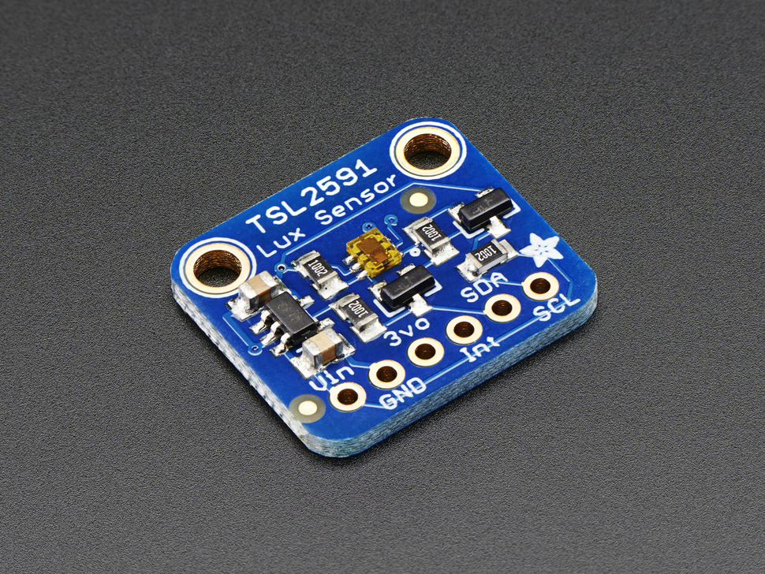

Measuring Light/Luminosity¶
TSL2591 - I2C Luminosity Sensor¶
The TSL2591 luminosity sensor is an advanced digital light sensor, ideal for use in a wide range of light situations. Compared to low cost CdS cells, this sensor is more precise, allowing for exact lux calculations and can be configured for different gain/timing ranges to detect light ranges from 188 uLux up to 88,000 Lux on the fly.
The best part of this sensor is that it contains both infrared and full spectrum diodes! That means you can separately measure infrared, full-spectrum or human-visible light. Most sensors can only detect one or the other, which does not accurately represent what human eyes see (since we cannot perceive the IR light that is detected by most photo diodes) This sensor is much like the TSL2561 but with a wider range (and the interface code is different). This sensor has a massive 600,000,000:1 dynamic range! Unlike the TSL2561 you cannot change the I2C address, so keep that in mind.
This board/chip uses I2C 7-bit address 0x29 (fixed).
More information¶
...
Where to buy¶
TSL2561 - I2C Luminosity Sensor¶
The TSL2561 luminosity sensor is an advanced digital light sensor, ideal for use in a wide range of light situations. Compared to low cost CdS cells, this sensor is more precise, allowing for exact lux calculations and can be configured for different gain/timing ranges to detect light ranges from up to 0.1 - 40,000+ Lux on the fly. The best part of this sensor is that it contains both infrared and full spectrum diodes! That means you can separately measure infrared, full-spectrum or human-visible light. Most sensors can only detect one or the other, which does not accurately represent what human eyes see (since we cannot perceive the IR light that is detected by most photo diodes)
The sensor has a digital (i2c) interface. You can select one of three addresses so you can have up to three sensors on one board - each with a different i2c address. The built in ADC means you can use this with any microcontroller, even if it doesn’t have analog inputs. The current draw is extremely low, so its great for low power data-logging systems. about 0.5mA when actively sensing, and less than 15 uA when in powerdown mode.
This board/chip uses I2C 7-bit addresses 0x39, 0x29, 0x49, selectable with jumpers.

Where to buy¶
CdS - AIN Luminosity Sensor¶
CdS cells are little light sensors. As the squiggly face is exposed to more light, the resistance goes down. When its light, the resistance is about 5-10KΩ, when dark it goes up to 200KΩ.
To use, connect one side of the photo cell (either one, its symmetric) to power (for example 5V) and the other side to your microcontroller’s analog input pin. Then connect a 10K pull-down resistor from that analog pin to ground. The voltage on the pin will be 2.5V or higher when its light out and near ground when its dark.